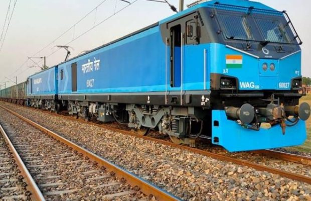

An electric locomotive is a locomotive powered by electricity from overhead lines, a third rail or
on-board energy storage such as a battery or a supercapacitor.
Locomotives with on-board fueled prime movers, such as diesel engines or gas turbines, are classed as diesel-electric
or gas turbine-electric and not as electric locomotives, because the electric generator/motor combination serves only as a power transmission system.
Electric locomotives benefit from the high efficiency of electric motors, often above 90% (not including the
inefficiency of generating the electricity). Additional efficiency can be gained from regenerative braking,
which allows kinetic energy to be recovered during braking to put power back on the line. Newer electric locomotives
use AC motor-inverter drive systems that provide for regenerative braking. Electric locomotives are quiet compared to
diesel locomotives since there is no engine and exhaust noise and less mechanical noise.
The lack of reciprocating parts means electric locomotives are easier on the track, reducing track maintenance. Power plant capacity is far greater
than any individual locomotive uses, so electric locomotives can have a higher power output than diesel locomotives
and they can produce even higher short-term surge power for fast acceleration.
Electric locomotives are ideal for commuter rail service with frequent stops. Electric locomotives are used on freight routes with consistently high
traffic volumes, or in areas with advanced rail networks. Power plants, even if they burn fossil fuels, are far cleaner than
mobile sources such as locomotive engines. The power can also come from low-carbon or renewable sources, including geothermal
power, hydroelectric power, biomass, solar power, nuclear power and wind turbines. Electric locomotives usually cost 20% less
than diesel locomotives, their maintenance costs are 25-35% lower, and cost up to 50% less to run.
WHO INVENTED ELECTRIC LOCOMOTIVE?
Werner von Siemens